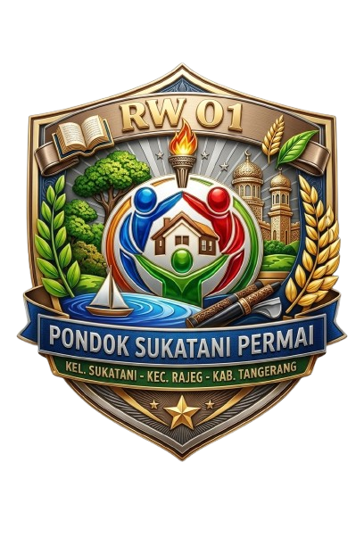

Kelurahan Sukatani • Kecamatan Rajeg • Kabupaten Tangerang
Portal resmi pelayanan warga RW 01 Pondok Sukatani Permai. Nikmati layanan administrasi, informasi dan transparansi RW secara mudah dan terbuka.
Akses layanan utama RW 01 secara online.
Buat surat pengantar secara online, kemudian cetak atau simpan sebagai PDF untuk dibawa kepada Ketua RT dan RW untuk tanda tangan dan stempel.
BUAT SURATLihat informasi pemasukan, pengeluaran, saldo dan transparansi keuangan RW 01.
LIHAT KEUANGANRW 01 Pondok Sukatani Permai
RW 01 Pondok Sukatani Permai
Pengurus RW 01
Pengurus RW 01
Pengurus RW 01
4 orang
Kepemudaan RW 01
Karang Taruna RW 01
RT 01 sampai RT 04
Ketua RT 01
Ketua RT 02
Ketua RT 03
Ketua RT 04
Informasi umum wilayah RW 01.
Pondok Sukatani Permai
RT 01 • RT 02 • RT 03 • RT 04
Mudah • Transparan • Terintegrasi
Portal ini merupakan sarana pelayanan dan informasi digital bagi warga RW 01 Pondok Sukatani Permai.
Portal menyediakan layanan Surat Pengantar Online serta informasi transparansi keuangan RW agar pelayanan dapat dilakukan dengan lebih mudah dan terbuka.
Portal Resmi Pelayanan Warga RW 01 Pondok Sukatani Permai.